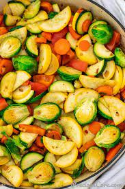
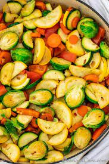

Sauteed veggies
What do you consider the vital components of a meal? For many, it’s a protein-rich main dish paired with a vegetable as a complementary side dish. And why wouldn’t you love that pairing? Quick and hearty, it’s the ideal weeknight meal and part of any healthy diet.
Boiled veggies
Want to steam veggies? We’re here to help. Steaming one of the quickest vegetable cooking methods there is. It also has a bad rap. Often this method results in overcooked, bland, and soggy veggies. But guess what? Turns out that if you cook until crisp tender and season correctly: the veggies are delicious every time! Here’s our master method for how to steam vegetables: the right way. If you have a specific veggie in mind, go to one of these recipes: